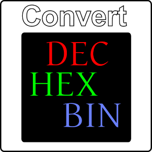

A very useful tool that allows you to check both Odd and Even Parity of up to 8 bytes. This also contains the nifty tool of automatic checksum when entering 8 bytes and Error checking allows you to quickly and efficiently enter data without worry. Download now at:Download

The Perfect tool for any programmer or computing student. This allows you to instantly convert any number into its counterparts. Download now at:Download
Fully functional scientific calculator with every function working as seen. For now unable to type in textbox but will be updated soon. Download now at:Download
Fully functional scientific calculator with every function working as seen. For now unable to type in textbox but will be updated soon. Download now at:Download